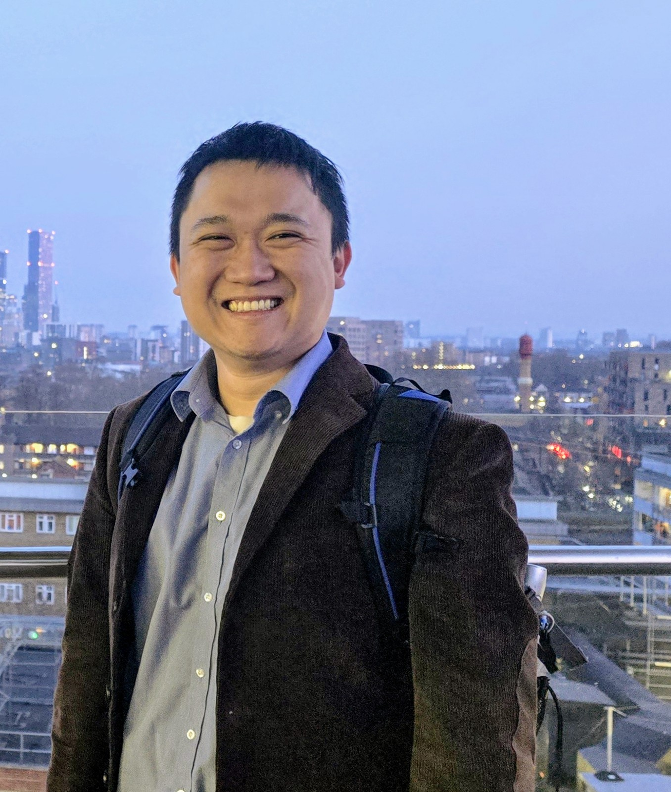

"Sanctions and Knowledge Spillovers."
with Kiet Duong, Toan Huynh, and Steven Ongena.
Associate Professor of Economics
Miami University, Farmer School of Business
vunt[at]miamioh[dot]edu
Curriculum vitae

I'd like to tinker with things related to international finance and macroeconomics, broadly defined. I am also an Associate Editor for Economic Inquiry and International Finance.
FRC (London, UK), Baltic Economic Conference (Riga), EEA (Dublin)*, RISE Conference (Cleveland Fed)*, Colgate University
QMUL (London, UK), UEA (Berlin, Germany), MMF (Reading, UK)
SNEE (Lund, Sweden), CEA (Toronto*), Midwest Macro (Purdue)
WEAI (Portland, OR), Midwest Macro Meetings (Utah and Texas), Liberal Arts Macro (Middlebury)
Canadian Economic Association Meetings (Virtual), Southern Economics Association (Virtual)
WEAI (Virtual), Southern Economics Association (Virtual)
(* selected co-author presentations)
with Kiet Duong, Toan Huynh, and Steven Ongena.
Principles of Macroeconomics; Intermediate Macroeconomic Theory; Money and Banking; Financial Crises and Recession
Instructor, Principles of Macroeconomics. Teaching Assistant for Time-series Econometrics (PhD), Econometrics (Masters), Intro to Econometrics, and Principles of Macroeconomics.